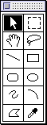
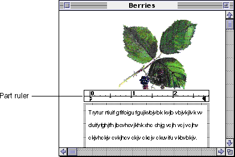
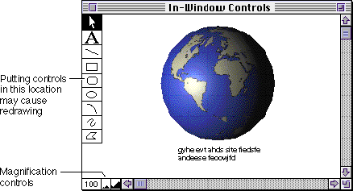

Controls
This section describes the basic functions you can provide with complex controls such palettes, tool bars, and scroll bars and explains where you should place them in relation to your part's content.Palettes and Tool Bars
In OpenDoc, palettes and tool bars can contain controls associated with a particular part. In general, you are encouraged to put controls into palettes that appear in utility windows rather than adorning the active part or the window frame. Figure 12-22 shows an example of a tool palette for a graphic part.
Whether a part's controls are inside or outside the document window, they are visible only when the part they support is active.Place your controls in locations that facilitate the association of the palette with your content in the user's mind. Proximity to your content is a key consideration,
as is consistency with palette placement by other parts. By default, you should initially place palettes in the upper-left corner of the screen. If the user's system includes multiple screens, display the palette on the same screen as the document it supports.You should allow the user to move palettes to any position on the screen and to hide palettes or tool bars and make them visible again. You may decide to make palettes and tool bars visible as soon as the part becomes active, or only when requested by the user. For example, you can include a Show ControlName command in one of your part editor menus. Once a palette is visible, the command should change to Hide ControlName. The user typically hides a control by clicking a close box or choosing the Hide ControlName command.
Because some part editors support several different types of controls, it is not a good idea to show all of them automatically when the part is activated. You can provide a preference in your Preferences dialog box that allows the user to set which palettes to show, or you can just keep it simple and let the user display the desired controls.
When palettes or tool bars are visible, they should always be in the topmost window layer, not hidden under anything else. However, it is possible to have two different palettes stacked on top of each other.
The state (visible or hidden) and position of each palette should remain the same between activations of your part. For example, suppose the user makes a palette visible and positions it in the upper-right corner of the screen, then activates a different part. Your part editor should display that palette in the same position the next time your part is activated.
Likewise, it is usually desirable to use the same palette position and state when the user creates multiple instances of your part within the same document. If a document has two instances of your drawing part, display your palettes in the same position regardless of which of the parts is activated. It is irritating to have the palettes change position just because the user clicks into a different instance of your drawing part. To maintain the perceived stability of the interface, your part editor should remember the position and state of palettes across editing sessions.
Externally Placed Controls
Controls that provide measurement or layout information for your part need to be as close as possible to its content. You can place them in separate display frames, created as overlaid frames (see "Requesting an Additional Display Frame" shows a text part with a ruler attached to it; the ruler is implemented as an overlaid frame adjacent to the text part's principal display frame.
In some circumstances the part may automatically display these controls when it becomes active, or they may be made visible via a Show ControlName command. In general, display overlapping controls when the user has chosen a command to display them or if the user has set an editor preference to have them displayed.If your part is embedded in another part when the user tries to display the controls, then you need to request overlaid frames from the containing part. If the containing part does not supply the overlaid frames, then you should display an alert box notifying the user that the controls could not be displayed and disable any Show ControlName commands. If the user opens the part into a part window, then you can display the controls with the part directly in that window, rather than in an overlaid frame.
Window Border Controls
You should place controls just inside the window border only when the controls apply to the entire document. Controls that appear inside the content area of the document will change whenever the user activates a different part. Think carefully about creating controls inside the content area of a window that will cause a redrawing of the window. Excessive redrawing makes the document seem less stable and distracts the user.Figure 12-24 shows a palette of drawing tools along the left edge of a window and some magnification controls at the lower-left corner of the window. Because they appear in the scroll bar area and apply to the entire document, the magnification controls don't interfere with the screen redrawing or the user's ability to see the document contents. Note that only the root part should place controls in the window border.
Figure 12-24 Window border controls

Scroll Bars in Frames and Windows
When your part is the root part of a document window, your part editor decides whether to display window scroll bars. In general, documents should have scroll bars when they can contain more information than is visible in the window. See Macintosh Human Interface Guidelines for complete information on scroll bars.Your part editor also determines whether its parts have scroll bars when embedded. However, adding scroll bars only when a part is activated violates the WYSIWYG (what-you-see-is-what-you-get) principle, because adding or removing scroll bars may cause the layout of surrounding content to change. Scroll bars can also create visual clutter in a document with lots of embedded parts with scroll bars.
There are, however, legitimate reasons for embedded parts to have scroll bars; scroll bars allow users to navigate through all the content of a part, even when the content area is larger than the frame shape. When you determine that it is beneficial to implement scroll bars in your embedded parts, observe the following guidelines:
For information on implementing scrolling in OpenDoc, see "Drawing With Scroll Bars"
- Whenever the document window in which your part is displayed becomes active, enable scroll bars in all of your parts that have them.
- When a user clicks an enabled scroll bar, immediately begin to scroll. In addition, the part containing the scroll bar should become the active part except when the clicked scroll bar belongs to the root part. This exception allows the user to scroll through the document to bring obscured portions of an active embedded part into view without losing the active state.
- Provide a command that allows users to hide the scroll bars when they wish. Alternatively, you could provide an editor preference or part setting for this purpose.
- Don't hide the scroll bars when your part becomes inactive. Rather, show the inactive appearance of scroll bars.
- Scrolling keys (such as the Page Up and Page Down keys) scroll the root part. If the root part doesn't scroll, however, these keys apply to the active part.